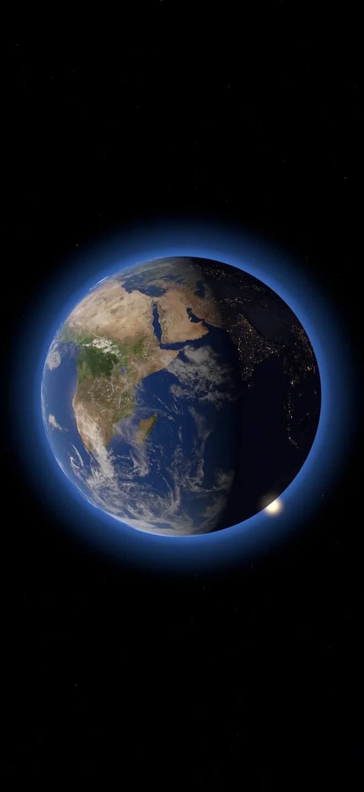
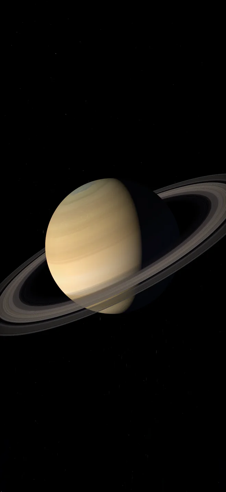
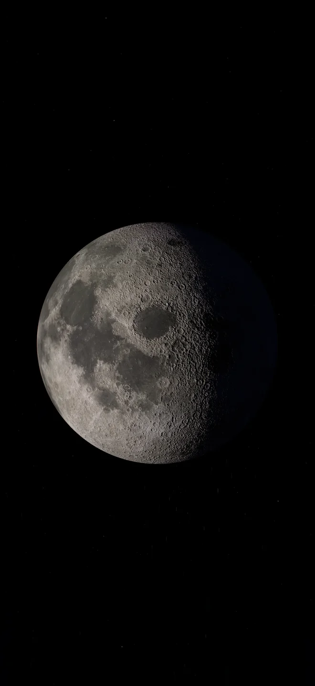
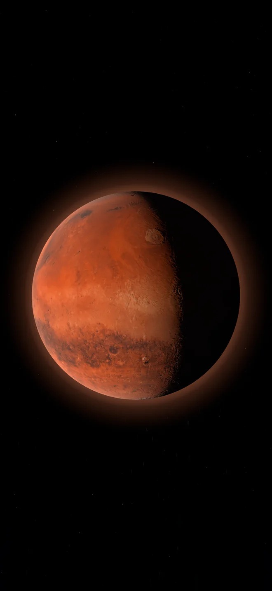

Half open, like a laptopThe planet above. A time-travel dial below.
The solar system, right now.
Free · iPhone and iPhone Duo · No account, no ads
Made for iPhone Duo
Every world, up close




Day, night and your city — exactly as they are now.
Watch the planets race along their orbits.
A calm soundtrack. Every planet sings its own note.